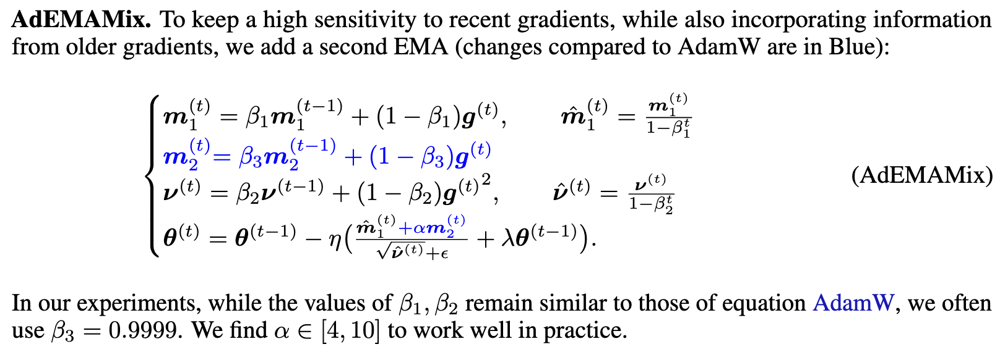
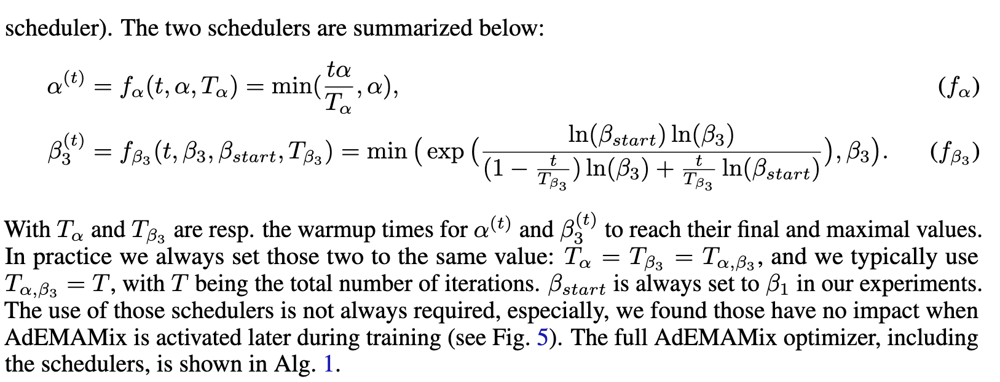
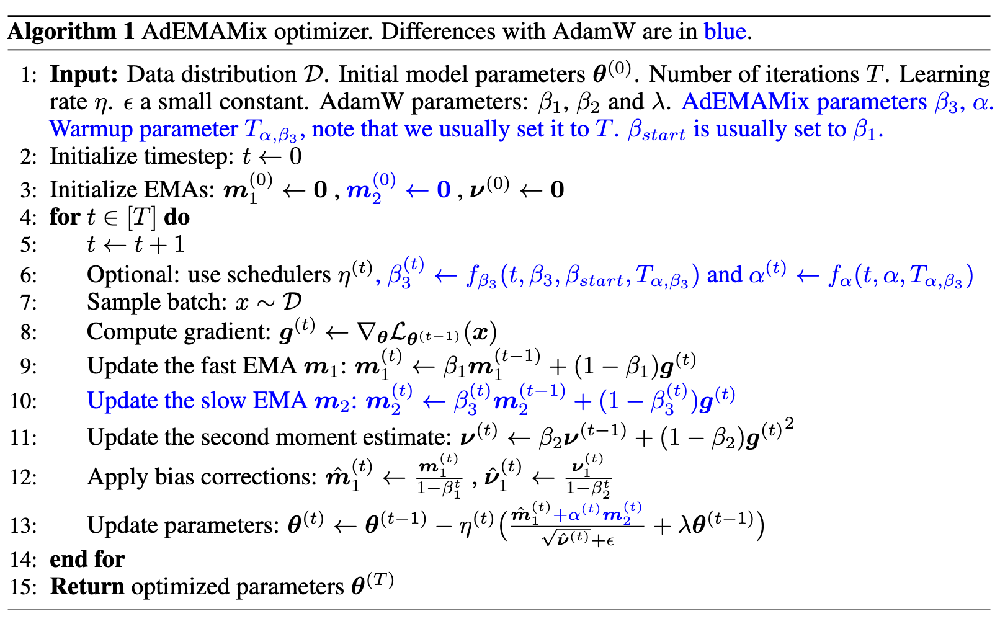

The AdEMAMix Optimizer: Better, Faster, Older
Abstract
Momentum based optimizers are central to a wide range of machine learning applications. These typically rely on an Exponential Moving Average (EMA) of gradients, which decays exponentially the present contribution of older gradients. This accounts for gradients being local linear approximations which lose their relevance as the iterate moves along the loss landscape. This work questions the use of a single EMA to accumulate past gradients and empirically demonstrates how this choice can be sub-optimal: a single EMA cannot simultaneously give a high weight to the immediate past, and a non-negligible weight to older gradients. Building on this observation, we propose AdEMAMix, a simple modification of the Adam optimizer with a mixture of two EMAs to better take advantage of past gradients. Our experiments on language modeling and image classification show — quite surprisingly — that gradients can stay relevant for tens of thousands of steps. They help to converge faster, and often to lower minima: e.g., a
When we increase β, we decrease the relative importance of recent gradients, and the iterate now fails to respond to local changes in the loss landscape. We observe that a single EMA cannot both give a significant weight to recent gradients, and give a non-negligible weight to older gradients (see Fig. 3a). However, a linear combination between a “fast-changing” (e.g. β = 0.9) and a “slow-changing” (e.g. β = 0.9999) EMA allows the iterate to beneficiate from (i) the great speedup provided by the larger (slow-changing) momentum, while (ii) still being reactive to small changes in the loss landscape (fast-changing). More precisely, we find the following statement to convey an important intuition behind this approach: While changing the direction of the slow momentum is difficult, any adjustment orthogonal to that direction is easy—which favors fast progress in sinuous canyon-like landscapes. (p. 2)
Fast changing in a sense that current updates take more priority and thus updating more rapidly.
In our experiments with AdamW, increasing β1 further degraded the performance (see App. C.1.6). Does this mean older gradients are outdated? We show that this is not the case, rather, increasing beta is reducing the sensitivity to recent gradients too much. We design AdEMAMix such that the sensitivity to recent gradients is kept, while also incorporating information from much older gradients using an additional momentum term. This allows for the use of much larger β values e.g. 0.9999. To compare, for β = 0.9999, thalf ≈ 6,930, spreading half of the mass over the previous 6,930 past gradients. (p. 5)

While we use learning rate warmup in all our experiments, we still noticed AdEMAMix models using a large β3 would diverge early. This, despite not using bias correction over m2, which lets the momentum buffer fill itself slowly. Those failed runs are characterized by updates of large magnitudes in the early phase of training (see App. C.1.7, Fig. 22). For this reason, we progressively increase the values of β3 and α using schedulers. For α we use a linear scheduler. (p. 5)
A linear scheduler for β3 would be ill-fitted as the same increment of β3 have a different impact for different values of β3. For instance, observe that an increase of β of δβ = 0.0001 barely increases the thalf for β = 0.9, while 0.999 → 0.999 + δβ increases the thalf of 77. For this reason, we design the β3 scheduler to increase thalf linearly (p. 5)


The sharpness of this decrease in loss is more pronounced for AdamW compared to AdEMAMix. However, when using AdamW, the loss on B then increases faster, which we interpret as the model forgetting B faster. In contrast, the curves for AdEMAMix are smoother, the loss on B goes back up slower, and ultimately B had a bigger impact on the training when using AdEMAMix—as can be seen by looking at the larger gap between the orange and blue curves for the last iteration. Finally, the forgetting behaviour evolve during training, with the later training batches being remembered better. (p. 7)
@misc{Pagliardini_Ablin_Grangier_2024, title={The AdEMAMix Optimizer: Better, Faster, Older}, url={[https://arxiv.org/abs/2409.03137v1](https://arxiv.org/abs/2409.03137v1)}, abstractNote={Momentum based optimizers are central to a wide range of machine learning applications. These typically rely on an Exponential Moving Average (EMA) of gradients, which decays exponentially the present contribution of older gradients. This accounts for gradients being local linear approximations which lose their relevance as the iterate moves along the loss landscape. This work questions the use of a single EMA to accumulate past gradients and empirically demonstrates how this choice can be sub-optimal: a single EMA cannot simultaneously give a high weight to the immediate past, and a non-negligible weight to older gradients. Building on this observation, we propose AdEMAMix, a simple modification of the Adam optimizer with a mixture of two EMAs to better take advantage of past gradients. Our experiments on language modeling and image classification show -- quite surprisingly -- that gradients can stay relevant for tens of thousands of steps. They help to converge faster, and often to lower minima: e.g., a $1.3$B parameter AdEMAMix LLM trained on $101$B tokens performs comparably to an AdamW model trained on $197$B tokens ($+95%$). Moreover, our method significantly slows-down model forgetting during training. Our work motivates further exploration of different types of functions to leverage past gradients, beyond EMAs.}, journal={arXiv.org}, author={Pagliardini, Matteo and Ablin, Pierre and Grangier, David}, year={2024}, month=sep, language={en} }